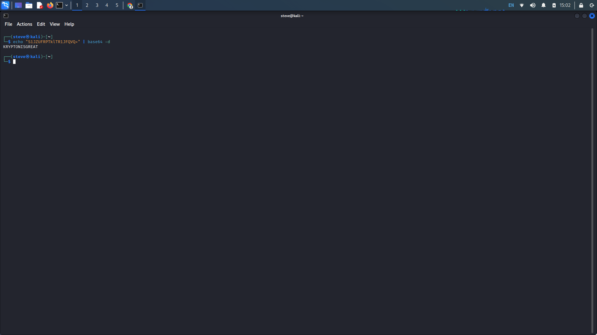
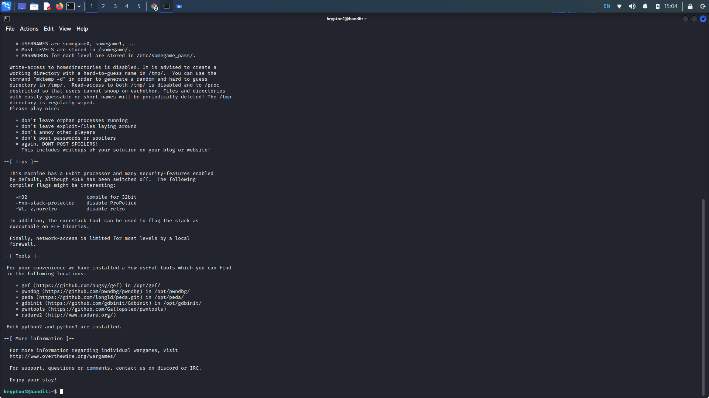
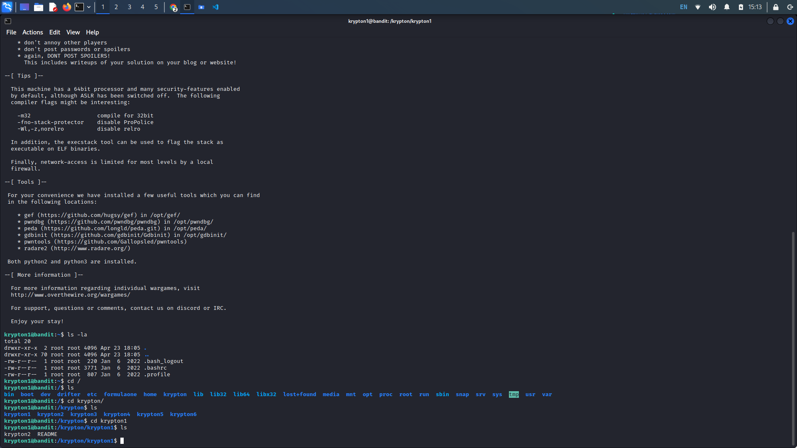
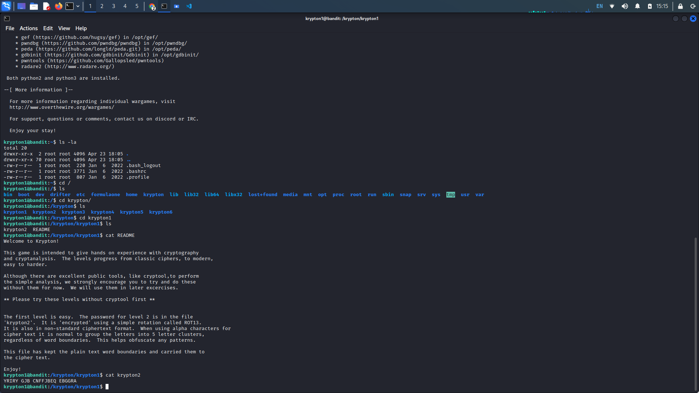
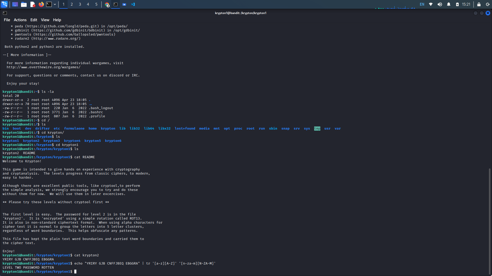
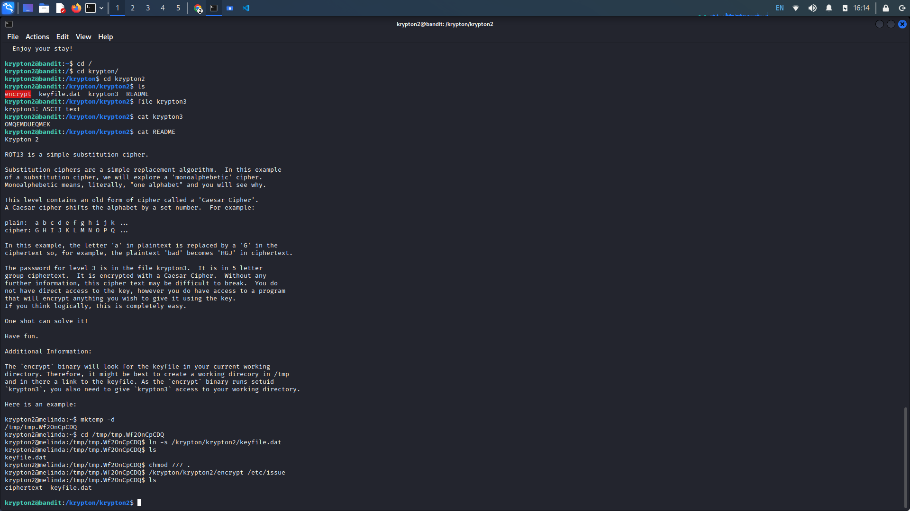
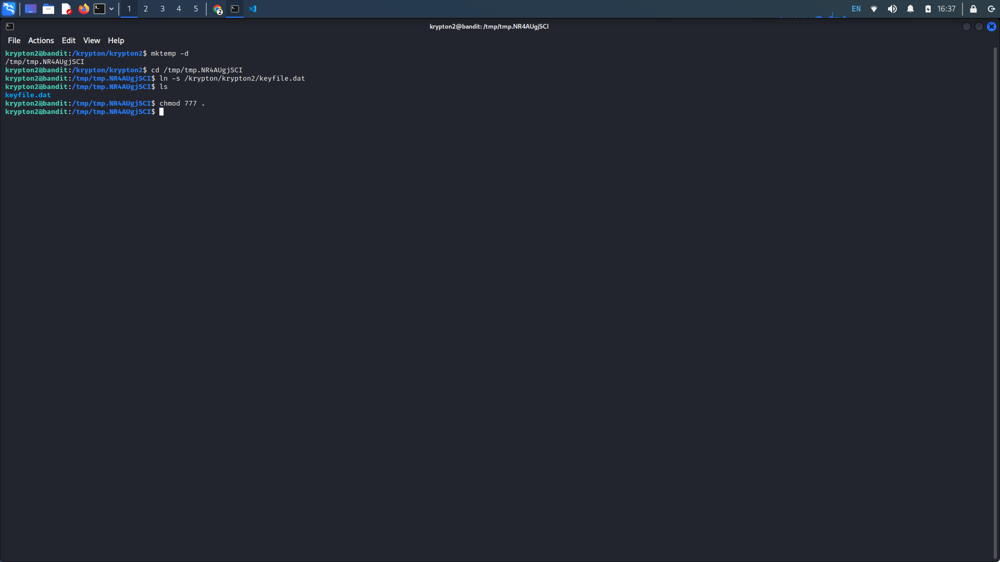
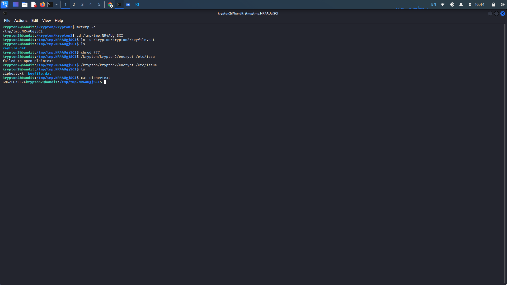
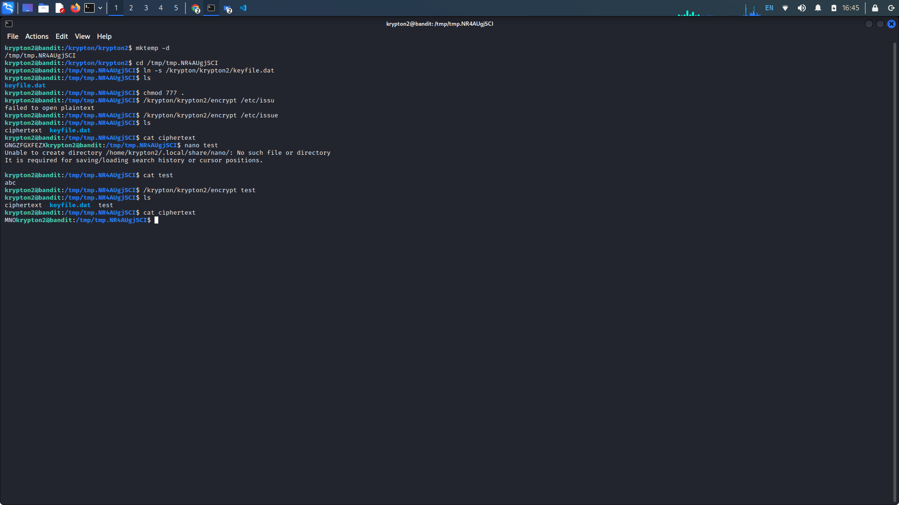
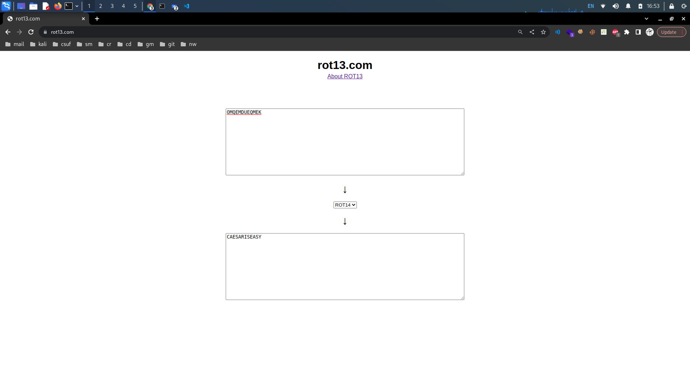

Krypton Level 0 → 3:
Krypton Level 0 → 1:
Level Goal:
Welcome to Krypton! The first level is easy. The following string encodes the password using Base64:
S1JZUFRPTklTR1JFQVQ=
Use this password to log in to krypton.labs.overthewire.org with username krypton1 using SSH on port 2231. You
can find the files for other levels in /krypton/
Writeup: The level info provides us with a base64 encoded string. We can easily decode the string
in our terminal by echoing the string to the base64 command.

With our password, we can ssh into the krypton1 machine with the provided server information.

Krypton Level 1 → 2:
Level Goal: The password for level 2 is in the file ‘krypton2’. It is ‘encrypted’ using a simple
rotation. It is also in non-standard ciphertext format. When using alpha characters for cipher text it is normal
to group the letters into 5 letter clusters, regardless of word boundaries. This helps obfuscate any patterns.
This file has kept the plain text word boundaries and carried them to the cipher text. Enjoy!
Writeup: Our working directory doesn't seem to have any files. Navigating to the root directory we
see a directory called krypton. In that directory navigate to krypton1 to obtain our challenge files.

Concatenating the krypton2 file, we see an encrypted string. Knowing the string is encrypted using a rotational cipher we can apply the same rotational cipher to the string to obtain the password. We just need to find out how many places the string is rotated.

Guessing the string has been encrypted using ROT13, we can echo the string to the tr command to substitute each letter 13 letters ahead of it. The decrypted string has our password for the next level.

Krypton Level 2 → 3:
Level Goal: The password for level 3 is in the file krypton3. It is in 5 letter group ciphertext.
It is encrypted with a Caesar Cipher. Without any further information, this cipher text may be difficult to
break. You do not have direct access to the key, however you do have access to a program that will encrypt
anything you wish to give it using the key. If you think logically, this is completely easy.
Writeup: Once again navigate to the krypton2 subdirectory in the root directory. Listing the
contents of the directory we are given an encryption executable, a keyfile data file, a krypton3 test file and a
readme file for the level.

Attempting to use the encryption executable on our plaintext krypton3 file we see that the file does not have permissions to create a file in the directory. Lets create our own temp directory that we will have read/write/execute access for. Additionally, we will create a link to the keyfile.dat in our temp directory as it is used by the encrypt executable to encrypt a string.

As shown in the readme file, it looks like we can test the linked keyfile by executing the encrypt file with /etc/issue as our argument. This gives us the encrypted string for the content of the issue file, we now know our link is functioning properly.

Lets create our own test file to run the encryption through to know what kind of cipher we are dealing with here. Create a text file with the string "abc" to observe the rotation used to encrypt our string. Now execute the encrypt file with the test file as our input. Concatenate the output ciphertext file to see the rotation applied.

It looks like we have ROT14 here seeing as M is 14 places ahead of A and N is 14 places ahead of B, and so on. Knowing this, we can easily apply ROT14 to the string in our krypton3 file for our password.
